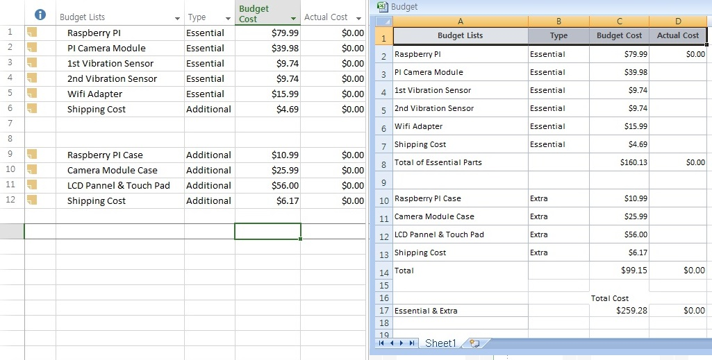

Week 11
Third Project Report
Progress Detail- We finished making the basic codes for vibration sensor and pi camera as the schedule
- The problem of sensor was not solved yet
Completed Progress in This Week- Setting up the connection between Raspberry Pi and Laptop
- Finding a suitable case for TouchscreenThingiverse Site Link
Delay Progress- There is no delay
Additional Problems - Using of GPS of mobil is hard to get exact location information on right event time.
- We also need a small LED for checking the vibration.
Problem Solution- Considering buying a GPS sensor for Rasberry Pi
- Setup a small PCB for sensors and LED
Budget Issue- Expected Increment
15.99 CAD+ 2.1(Tax) expected for GPS Sensor
Week 10
Second Project Report
Project Progress Rate- 41% Done
Progress Detail- We finished making the basic codes for vibration sensor and pi camera as the schedule
Completed Progress after last report- Making PCB
- Buying andditional parts
- Building a Video to explain project
- Making basic Python codes for sensor and pi camera
Delay Progress- There is no delay
Additional Problems - It was hard to use touch screen until making GUI codes
- It was little hard to get the event signal we wanted becasue sensor was too sensitive
Problem Solution- To use VNC or physical I/O devices in this semester
- To find suitable value of resistor
Budget Issue- Increment
7 Inch Touchscreen (70.5CAD + Taxes = 79.67CAD)
Week 9
The Build Video
Setup Files for Additional Parts
Week 6
The Mechanical Assembly Milestone
Project Process Rate- 11% Done
Progress Detail- All steps are not delayed except "Software Development"
Completed Progress- Project Proposal
- Budget Planning
- Item Acquisition
- Team Meating
Delay Progress- Software Development Schedule
Delay Reason- Different Schedule of Software Project : This Process required the process of Software Project, but it's schedule was later than we expected
- Two days Breaktime : Study Days(Oct. 6. to Oct. 7.)
Problem Solution- Exchanng the schedule time of "Software Development" and "Test Run Project of Hardware"
Budget Issue- Decrease Camera Module (15.6 CAD Saved)
- Increase 5 Inch Touch screen price expected around 25 CAD increases(base on offline store price)
Week 4
Prepare the Clear ProjectBox and Acquisitions
Clear Project Box


Week 3
Budget Report
- Raspberry PI
- Vibration Sensors
- WiFi Adapter
- PI Camera Module
- Additional Parts(Such as Cases)

Budget Excel File
Week 2
Importance of Safety & Project Proposal
Project Proposal
- GANTT Chart

Week 1
- First Quiz about ClearBox
- Raspberry PI LED Changing